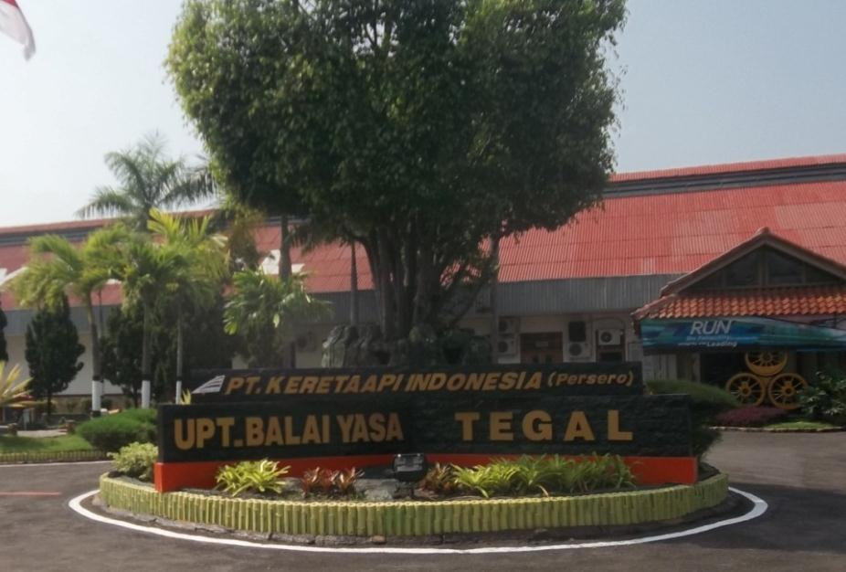
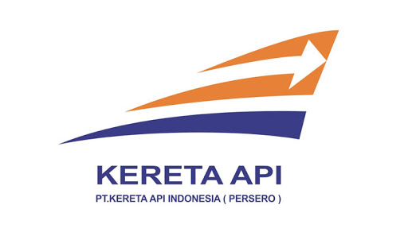

Balai Yasa Tegal merupakan balai yasa yang digunakan khusus untuk perbaikan kereta dan gerbong. Balai yasa ini sudah mendapat sertifikat ISO 9001:2008 pada tahun 2010. Balai yasa ini melayani kereta kelas eksekutif (K1), bisnis (K2) dan ekonomi (K3), termasuk kereta makan (M), kereta pembangkit (P), dan kereta makan pembangkit (KMP/MP) dan kereta bagasi (B) dari Daop IV, V, dan VI, dan pada kesempatan yang jarang, dari Daop III. Balai yasa ini pada awalnya tidak melayani kereta kelas eksekutif, namun kini Balai Yasa Tegal sudah dapat melayani kereta kelas eksekutif, dimulai sejak tahun 2015 di mana balai yasa ini meretrofit kereta bisnis lama menjadi kereta makan kelas eksekutif.
Pada masa penjajahan Belanda Balai Yasa Tegal merupakan unit atau bagian dari perusahaan kereta api swasta semarang – cirebon, yaitu Stoomtram Maatchappij (SCS) milik Belanda yang didirikan pada tahun 1893 dengan nama bengkel Kereta Api Tegal yang bertugas melaksanakan perawatan loko uap, kereta dan gerbong milik SCS.
Namun tidak semua Balai Yasa mempunyai tugas lengkap seperti di atas, di Jawa masing-masing mempunyai tugas khusus. Sedangkan di Balai Yasa Tegal pada awalnya hanya perawatan dan perbaikan Gerbong saja, namun mulai tahun 2000 Balai Yasa Tegal juga menerima Perbaikan dan Perawatan Kereta.
| Bagian | Jumlah Anggota |
|---|---|
| General Manager | 1 |
| Logistik | 12 |
| SDM | 8 |
| Administrasi | 8 |
| Quality Control | 12 |
Klik Gambar dibawah ini untuk menuju laman resmi PT KAI
Alamat : Jl. Semeru No. 5 Tegal